Describe or illustrate
Start with a prompt or a drawing. Image uploads can be reviewed and redrawn for rigging before you approve the source.
Interactive characters generated by Inkinesis.
Try the controlsActual rig playback. Each character keeps the movements its design supports.
Manuscript evaluation set. Timing includes remote decomposition and rendered evidence, excludes image generation. Runtime correspondence is a geometric check, not a perceptual score.
An illustration captures a moment. A rig lets you decide what happens next.
Inkinesis turns a character illustration, or a character described in words, into a reusable, layered 2D asset. Move a shoulder without moving its elbow. Turn the head, blink, or speak. Then take those controls into Inochi2D or Live2D.
Our focus is the space between appearance and animation: verifying joints against the separated layers, deciding which garment pixels follow each limb, and preserving the combined behavior across runtimes.
Turning an illustration into an interactive character requires agreement between appearance layers, joint ownership, facial motion and runtime semantics. Inkinesis builds on two existing components, See-through for semantic layer decomposition and psd2live for the facial source rig, and contributes the layer in between: a stated input contract with deterministic pixel checks, landmark verification against the decomposition, anatomy-based garment ownership for sleeves and trouser legs, two-joint limb controls composed with the prepared face under a shared facial pitch field, shaped expression edits, and export of the combined behaviour to Inochi2D and Live2D with runtime-semantic correspondence checked numerically against the browser evaluator and the official Cubism Core. Ablations on the delivered rigs compare the ownership rule with nearest-bone and soft-falloff assignment and the limb blend with rigid and linear alternatives. 53 completed assets, drawn on transparent backgrounds from two prompt sets and rigged once by the pipeline, pass native correspondence with no reversed triangle, and 53 of them have zero Core-aware drawable mismatches under official Cubism Core; the pass from saved illustration to delivered rig and rendered evidence takes a median of 235 seconds including remote decomposition. The result is a portable, inspectable rig with bounded motion; the evidence is geometric, and a perceptual study remains open.
Real controls. Right here in your browser.
No account, installation, or GPU required.
Switch to Mesh to inspect the deformed triangles while moving a control. The overlay includes overlapping part meshes.
A pipeline built around the character, with explicit checks at every boundary.
Start with a prompt or a drawing. Image uploads can be reviewed and redrawn for rigging before you approve the source.
See-through decomposes the appearance. We check landmarks against its layers and prepare registered facial variants.
Compose two-joint limbs with the psd2live face rig. Garments follow their owning limbs; unsupported motion stays still.
Deliver an Inochi2D rig and a Live2D package. Compare the control behavior with the browser and official Cubism Core.
Swipe to follow the pipeline →
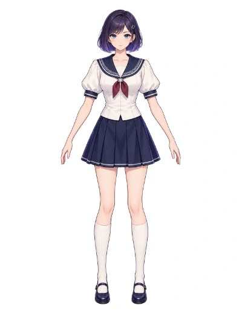
Prompt or drawing
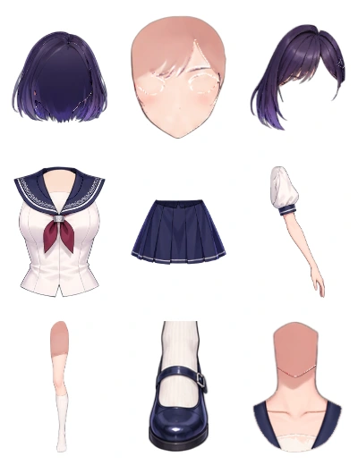
See-through decomposition
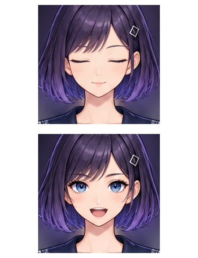
Registered eye & mouth edits
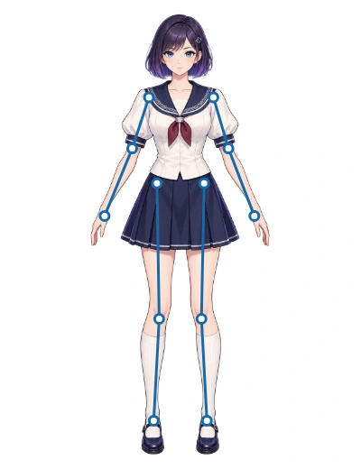
VLM proposes · Inkinesis verifies
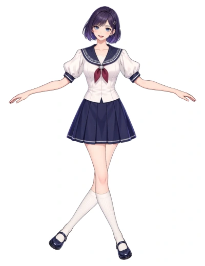
Limbs + face + garment ownership
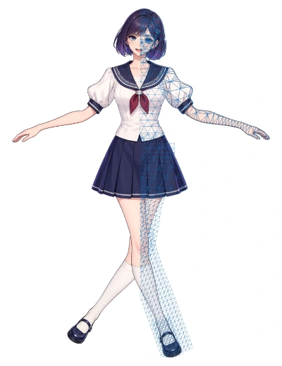
Official Core + deformed mesh
Follow the numbers: 01 source → 02 preparation & verification → 03 composition → 04 export.
Export check: 379 test poses match official Cubism Core, accounting for how the runtime samples controls.1
The saved report has 0 drawable mismatches when the source evaluator follows Core’s parameter sampling, within the recorded 0.001 tolerance. Direct evaluation without that sampling adjustment reports 1 mismatch. This checks geometry and opacity, not perceived image quality. Read about runtime sampling.
Separate Purple Couture’s saved layers by scrolling or using the slider.
Assembled layers
Saved See-through layers in six groups. The assembled view preserves their original 2D positions.
Watch the jacket front as you switch methods. The sleeves should follow the arms while the front of Saffron Orbit’s jacket stays in place.
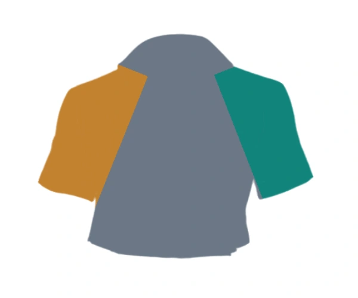
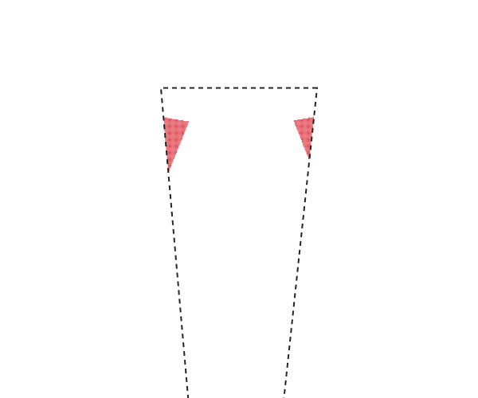

Red marks the measured torso pixels that move more than 2 px. Left: their original positions inside the dashed region. Right: their projected positions, including pixels hidden behind other parts.
Anatomy and the garment’s visible shape define the sleeve boundaries, keeping more of the torso fabric anchored as the arms move.
Gray follows the torso; teal and gold follow the character’s left and right arms. Soft falloff mixes colors by influence. Counts cover 40,985 topwear pixels in the shoulder–hip quadrilateral, using the recorded arm pose. The red overlay projects the same measured displacement field; it is not a segmentation of visible pixels in the rendered pose. The metric measures displacement, not perceived quality.
The drawing sets the limits. A held prop, hidden knee, or long garment can constrain motion. Those regions are reported and kept still or given a reduced range; hidden anatomy is not assumed to be available.
Matched component comparisons at identical controls. Drag right to reveal Inkinesis; drag left to reveal Without. The facial example plays both versions with identical timing.
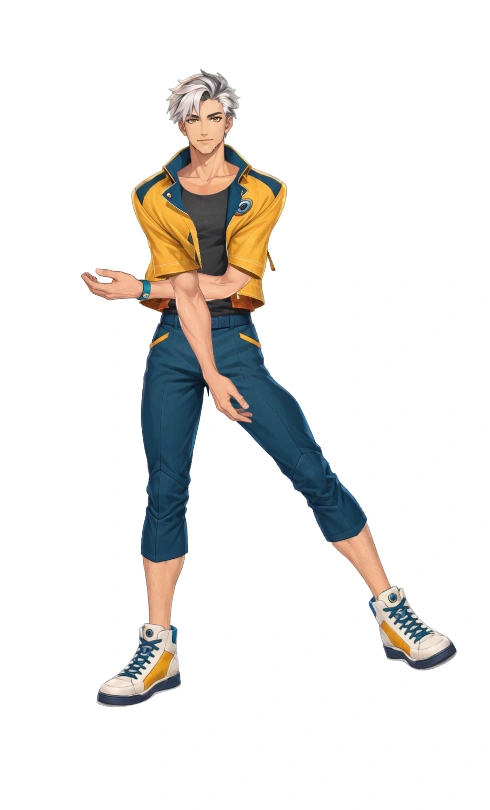
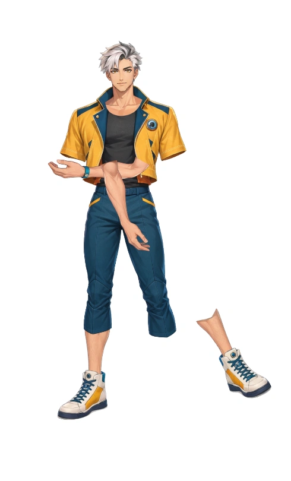
Shared clothing chainsSkin-only articulation
Saffron Orbit, identical recorded arm and leg controls. Moving the leg alone leaves the trouser fabric behind; shared chains move the fabric with it.
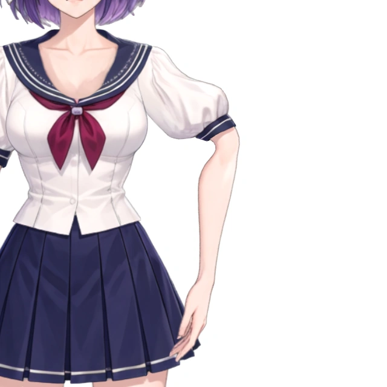
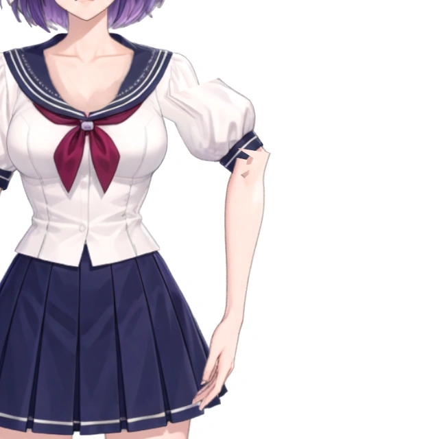
Smoothstep joint blendRigid joint split
Purple Couture, matched limb-ablation renders. Compare a rigid split at the joint with the continuous smoothstep blend; the source textures are unchanged.
Shared facial pitchOriginal facial pitch
Obsidian Bat Cabaret, identical head tilts. A second, broken brow contour appears in the original motion; shared facial pitch keeps the brow together. Pause or drag to compare.
At −30°, the original motion leaves a separated, dotted edge above the eyebrow. With shared facial pitch, that extra contour is no longer visible in this pose.
“Without” denotes the baseline for the component being compared. These are recorded development comparisons, not separate generated images. Each pair shares its framing and control settings. The facial animation uses a selected 0° to −30° range; it does not demonstrate every supported head angle. These examples are not a perceptual benchmark.
A cast of humans, creatures, and impossible professions.
Open a character to animate it and read its original prompt.
No characters match. Try another name or clear the filters.
Loading the collection…
Purple Couture, live in VTube Studio. The same exported model responds to webcam face tracking and hand-driven arm controls—without generating a new image for every frame.
Explore the Live2D workflowHead orientation, gaze, blinking, and mouth opening driven by VTube Studio’s face tracking.
Four bounded mappings connect tracked hand positions to the existing shoulder and elbow controls.
Selected four-second excerpts from real local sessions, at original speed. Tracking is provided by VTube Studio. The arm adapter maps hand positions to joint controls; it does not reconstruct finger motion or anatomical arm angles. These recordings demonstrate interoperability, not a tracking benchmark or a tested live broadcast.
A portable rig still inherits the limits of its drawing. Numerical correspondence does not guarantee a natural-looking pose.
A stress sweep combines yaw −45°, pitch −30°, roll −30° and mouth opening 1. Neck boundaries and facial shapes can look unnatural near these extremes. The illustration supplies no new underside of the chin or hidden hair texture; the live demo uses smaller angles.
The right arm is held in its drawn pose because its hand touches a static prop. Moving it independently would leave the object behind. This saved stress example is excluded from the 53-character gallery and illustrates a constraint, not a successful full-body rig.
The first clip is an actual stress sweep of the published web-preview rig, with no motion extrapolated past its parameter bounds. The second is a saved development recording at its original timing.
A preview is the beginning. Download the character, inspect the rig, and use its controls in your own workflow.
Get started with InkinesisThe canonical, inspectable rig.
Layered geometry and persistent parameters.
A compatible runtime package.
Model, textures, and editable project export.
Source code: Apache-2.0. Character assets and external runtimes have separate terms. Asset notice ↗
Inkinesis builds on See-through for semantic decomposition and psd2live for facial keyforms and serialization. We thank Inochi2D for its open puppet format and native runtime, and Live2D Cubism for the official Core used in export validation. Their licenses and asset terms remain separate.
Software citation for now.
The paper link will be added when available.
@software{celiktenyildiz2026inkinesis,
author = {Çeliktenyıldız, Mehmet Salih},
title = {Inkinesis: Turning Illustrations
into Portable 2D Character Rigs},
year = {2026},
url = {https://github.com/codewayco/Inkinesis}
}